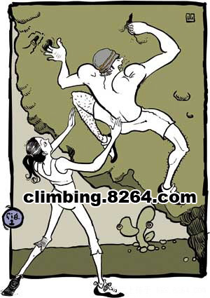

[转寄/推荐][转贴][删除][修改][设置可RE属性][上一篇][返回讨论区][下一篇][回文章][同主题列表][同主题阅读][从这里展开]
发信人: hemind(hooft), 信区: outdoor 标 题: 【转载】安全之手 如何提供更好的抱石保护 发信站: 饮水思源 (2015年04月21日22:45:47 星期二) 转自 安全之手 如何提供更好的抱石保护[组图] http://www.8264.com/viewnews-24313-page-1.html 几年前翻译的文章,呵呵,当练英语了,英汉对照,如有误译,欢迎指正。 现在喜欢抱石的朋友越来越多,因抱石而受伤的朋友也不少.找来杂志的这篇文章,希望 大家对抱石的保护有个基本的认识。 Safe hands — how to give better bouldering spots 安全之手--如何提供更好的抱石保护 By Dave Pegg（Climbing Magazine,No207, Nov 1, 2001, P.92, ） The worst spot I ever had was at Hueco Tanks, Texas. One moment I was near the top of Best of the West pawing at two miserable slopers; the next I was h urtling backward toward the ground. To his credit, my spotter didn't flinch. I n fact, he didn't move -- an inch. I hit him like an express train and pancake d him into the ground. We both ended up flat on our backs, me badly winded, hi m bruised and shaken. 我碰到过最差劲的抱石确保，发生在德克萨斯的Hueco Tanks.前一刻我的双手还扒在 两个痛苦的磨擦点上，接近Best of the West线路的顶端；而下一秒，我的背部猛烈地撞 到地上.我的确保者对他的”功劳”丝毫不感到愧疚.事实上，他连一英寸都没有移动.我象 高速列车一样把他撞倒在地.最后，我俩都躺在地上，我几乎喘不过气来，他则鼻青脸肿， 不停地颤抖. Good spotting is as important as good belaying. Yet, although we all go th rough the motions, surprisingly few boulderers give sufficient thought or atte ntion to spotting -- or even know how to do it properly. As I learned at Hueco , a clueless spotter, no matter how courageous, is no substitute for one with good technique. 好的抱石确保同攀岩确保一样，都是非常重要的.尽管我们都曾经为别人确保， 但是 能在确保过程中投以充分的注意和关心，甚至是知道如何正确进行抱石确保的抱石者，却 少得令人惊讶.我在Hueco得到的教训是：一个无知的抱石确保者，无论多么热忱勇敢,也绝 对无法取代一个经验丰富的确保者. Bad spotting often stems from a misconception of what spotting is. Spotter s don't have to "catch" falling boulderers. Instead their aim is to steer them onto a safe landing site, ensure they land feet first, and, if possible, slow them down a bit, taking some of the sting out of the fall. 不良的抱石确保往往源于对确保的误解.实际上确保者不需要「接住」脱落的抱石者， 而是将他们导向一个安全的落点，确保抱石者是脚先着地；同时，尽可能减缓他们坠落速 度，以减轻坠落带来的伤害. The first step to good spotting is standing correctly. Position yourself a foot or so behind the likely point of impact, moving as the boulderer moves. Your knees and elbows should be slightly bent to absorb the shock of a fall; y our palms should be open with the fingers extended -- bent, jammed digits are a common spotting injury. Resist the temptation to watch the boulderer's hands ; focus on the area of the boulderer's hips or back where you intend to apply the spot. 良好抱石确保的第一步是站在正确的位置.站在可能的脱落位置之后一步左右，随着抱 石者移动.略微地弯曲你的膝部和肘部，并张开手掌，用来吸收坠落带来的冲击；确保的时 候要注意防止手指挫伤.别老是盯着抱石者的手部，把注意力放在抱石者的臀部或是背部， 以随时提供必要的保护. Fork lift. When spotting steep, medium-height problems, aim to grab the bo ulderer on both sides of the upper back, just below the armpits. This will tip him upright. Keep your outstretched hands as close to the boulderer's back as possible so he has little time to accelerate if he falls (figure 1). Fork lift (叉车式) 当你确保的是较为陡峭、中等高度的线路时，瞄准抱石者背部上方的两侧，大约是腋 下的地方.这样可以保证抱石者在脱落时身体保持竖直.伸出的双手尽量靠近抱石者的背部 ，使其脱落时的加速度减到最小.（图一）  screen.width - 200){this.width = screen.width - 200}"> |
[转寄/推荐][转贴][删除][修改][设置可RE属性][上一篇][返回讨论区][下一篇][回文章][同主题列表][同主题阅读][从这里展开]